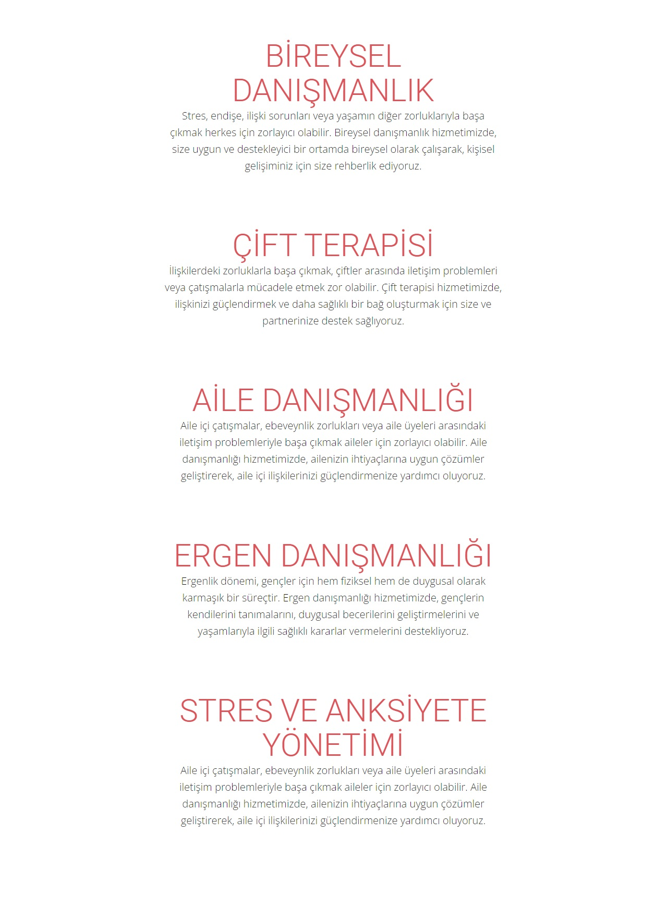

{% extends "base.html" %}

{% block title %} Hizmetlerimiz {% endblock %}

{% block content %}
<!-- <div class="container bg-light">
    <h1 class="mb-5">Hizmetlerimiz</h1>
    <div class="row mb-5">
        <div class="col-md-6 ">
            <h3>Bireysel Danışmanlık</h3>
            <p>Stres, endişe, ilişki sorunları veya yaşamın diğer zorluklarıyla başa çıkmak herkes için zorlayıcı olabilir. Bireysel danışmanlık hizmetimizde, size uygun ve destekleyici bir ortamda bireysel olarak çalışarak, kişisel gelişiminiz için size rehberlik ediyoruz.</p>
        </div>
        <div class="col-md-6">
            <h3>Çift Terapisi</h3>
            <p>İlişkilerdeki zorluklarla başa çıkmak, çiftler arasında iletişim problemleri veya çatışmalarla mücadele etmek zor olabilir. Çift terapisi hizmetimizde, ilişkinizi güçlendirmek ve daha sağlıklı bir bağ oluşturmak için size ve partnerinize destek sağlıyoruz.</p>
        </div>
    </div>
    <div class="row mb-5">
        <div class="col-md-6">
            <h3>Aile Danışmanlığı</h3>
            <p>Aile içi çatışmalar, ebeveynlik zorlukları veya aile üyeleri arasındaki iletişim problemleriyle başa çıkmak aileler için zorlayıcı olabilir. Aile danışmanlığı hizmetimizde, ailenizin ihtiyaçlarına uygun çözümler geliştirerek, aile içi ilişkilerinizi güçlendirmenize yardımcı oluyoruz.</p>
        </div>
        <div class="col-md-6">
            <h3>Ergen Danışmanlığı</h3>
            <p>Ergenlik dönemi, gençler için hem fiziksel hem de duygusal olarak karmaşık bir süreçtir. Ergen danışmanlığı hizmetimizde, gençlerin kendilerini tanımalarını, duygusal becerilerini geliştirmelerini ve yaşamlarıyla ilgili sağlıklı kararlar vermelerini destekliyoruz.</p>
        </div>
    </div>
    <div class="row mb-5">
        <div class="col-md-6">
            <h3>Stres ve Anksiyete Yönetimi</h3>
            <p>Günümüzün hızlı tempolu yaşamı, stres ve anksiyete düzeylerimizi artırabilir. Stres ve anksiyete yönetimi hizmetimizde, stresle başa çıkmak için etkili stratejiler öğrenmenize yardımcı oluyoruz, böylece daha dengeli ve mutlu bir yaşam sürmenizi sağlıyoruz.</p>
        </div>
    </div>
</div> -->

<div class="image-container">
    
</div>

<style>
    .image-container {
    display: flex;
    justify-content: center;
    align-items: center;
    height:auto; /* Konteyner yüksekliği */
}
</style>

{% endblock %}